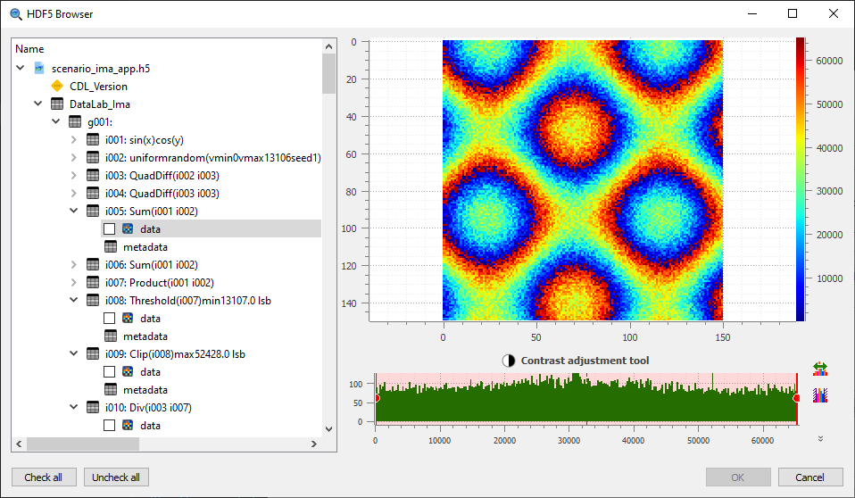

HDF5 Browser#
The “HDF5 Browser” is a modal dialog box allowing to import almost any 1D and 2D data into DataLab workspace (and eventually metadata).

Compatible curve or image data are displayed in a hierarchical view on the left panel, as well as other scalar data (scalar values are just shown for context purpose and may not be imported into DataLab workspace).
The right panel displays the selected curve or image data. It also shows information on “Group” (path, description, etc.) and “Attributes” (names and values).
- The HDF5 browser is fairly simple to use:
On the left panel, select the curve or image data you want to import
Selected data is plotted on the right panel
Click on “Check all” if you want to import all compatible data
Then validate by clicking on “OK”
Note
The HDF5 browser may be used to explore multiple HDF5 files at once, thus allowing to import data from different files into the same DataLab workspace.
NeXus files and physical axes#
Open .nxs and .nx5 files with Browse HDF5 file, just like .h5
files. A NeXus NXdata group designates a measured dataset and its axes.
Select the group to import the complete scientific object, rather than selecting
its individual datasets: a 1D group produces a signal, and a 2D group an image.
The raw datasets remain available separately in the tree.
The import preserves axis values, labels and units, including non-uniform image coordinates. Signal Y uncertainties are imported when supplied; image uncertainties are not imported. Histogram axes supplied as bin edges are converted to bin centers, and this conversion is recorded.
An axis with an invalid shape or length, an axes attribute that does not
give one axis per dimension, or an axis that does not hold numbers is reported
in the group description and prevents importing the group. An undeclared axis
uses point or pixel indices; the importer does not infer a physical axis from
neighbouring datasets. Images need increasing coordinates: a decreasing image
axis is reversed together with the image, and this conversion is recorded,
while an image axis that is not strictly monotonic prevents the import.
Files written with the legacy NeXus conventions, such as the scans of
synchrotron SOLEIL, are imported with their axes too: an axis dataset may give
the dimension it describes with its axis attribute, the one with the lowest
primary attribute being preferred. The other measured datasets of a group,
such as all the counters and detectors of a scan, appear as additional items
below the group, each with the axes that fit its dimensions: a counter is a
signal versus the scanned motor, a detector writing a spectrum at each point an
image with the motor along Y, and a detector writing an image at each point a
stack of images (see below).
When a NeXus file designates a default measurement (default attributes), the
browser selects and previews it when the file is opened. Compressed detector
data, such as the bitshuffle/LZ4 data of Eiger detectors, is read; a dataset
compressed with an unavailable filter is reported in the tree instead of failing.
Files with several counters or incomplete NeXus descriptions can be interpreted by a plugin-provided data mapping. Each mapped object appears as an additional item with its own axes, labels and units; the axes of a mapped object may describe its first dimensions only, so that one mapping applies to the counters and detectors of a scan. Mappings must be registered before opening the file; DataLab does not automatically discover JSON files beside it. Plugin authors can follow the SigimaX HDF5 import guide.
Large datasets and previews#
Listing numeric datasets uses their shape and type without loading all their values. Textual value previews read only the first elements, and attributes containing more than 10 000 values are not copied to imported object metadata. Graphical previews are read in a background thread; only the preview of the last selected item is displayed, and items selected meanwhile are not read. Selecting an item that cannot be previewed, such as a group, clears the preview. Broken links, such as external links to missing detector files, are skipped when the file is opened.
Large ordinary 1D arrays and 2D images, NeXus and mapped objects are previewed
with a sampling step above 2**24 elements (about 16.8 million). Import still
reads every value, not the sampled preview. This is not a universal memory
limit: compound datasets and signals stored as 2D tables still use complete
objects for their graphical previews. Closing a file or the browser waits for
its preview read to end.
Multidimensional datasets#
Datasets with three or more dimensions, such as image stacks and spectral cubes, are imported as one image or signal per frame. Selecting such an item shows a view selector below the preview:
View: images of two axes, or signals along one axis
Frames along: the axis along which frames are taken, with the First and Last frame and a Step
Fixed indices: the index of the other axes, if any
Import these frames: makes the item checkable and checked; unchecking the item cancels the import
The first frame of the view is previewed, and the number of frames is shown.
Images of the last two axes, with every frame along the preceding axis, are
proposed by default, unless the NeXus interpretation attribute of the
dataset designates spectra (signals along the last axis) or RGB images (one
image per channel). DataLab asks for confirmation before importing more than
100 frames. The frames of NeXus datasets keep the axes of their displayed
dimensions; their title gives the frame indices and, if the other axes have
coordinates, the position of the frame (e.g. frames[3, :, :] (theta=0.3)).
Developers can also read views without creating objects, using the selection
API described in the SigimaX guide.
Numerical values and experimental origin#
Unsigned 32-bit detector counts above 2 147 483 647 are imported as float64
images without clipping or rounding. Other integer arrays are also converted
to an exact supported type when possible. If conversion to floating point
cannot preserve every integer (in particular beyond +/-2**53 for float64),
Sigima emits a warning instead of silently promising exact values. Complex
signals keep their imaginary part, including single-precision ones.
NeXus and mapped objects carry an experimental_source metadata entry
describing the source file, group, measured dataset, axes ("." for a
dimension without axis) and recorded conversions, with the title, start and end
times of the NeXus entry, and, for frames, the frame indices and position.
Mapped objects also identify their mapping. This entry describes
where the measurement came from; it is not the processing provenance shown in
the Properties panel and does not make the experiment reproducible.
Save the imported objects in a DataLab workspace to keep both their data and this metadata. Reopening that workspace does not require the original NeXus file or the mapping plugin. Generic raw dataset imports do not automatically receive this structured experimental source.